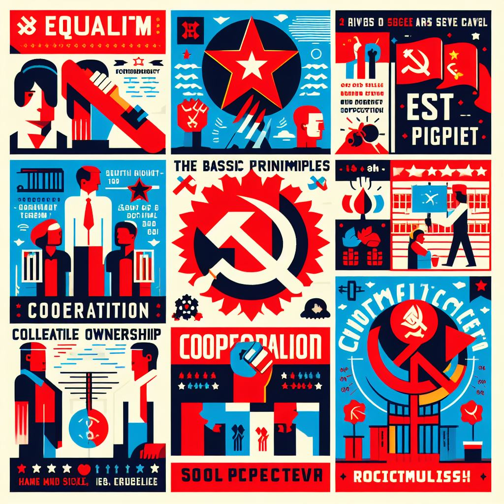
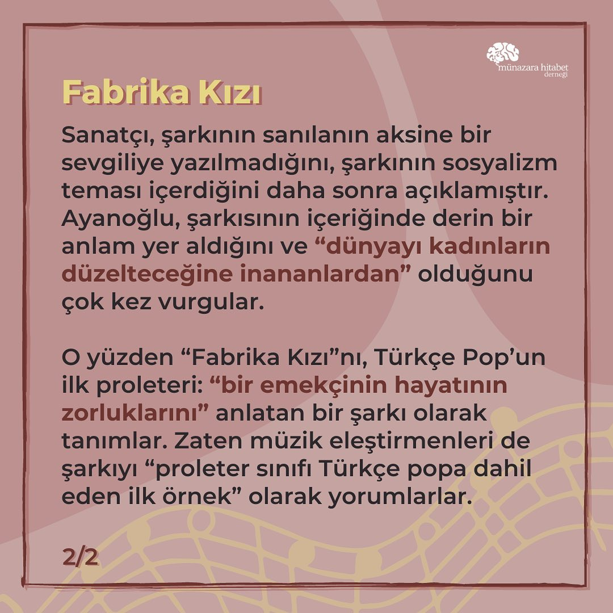
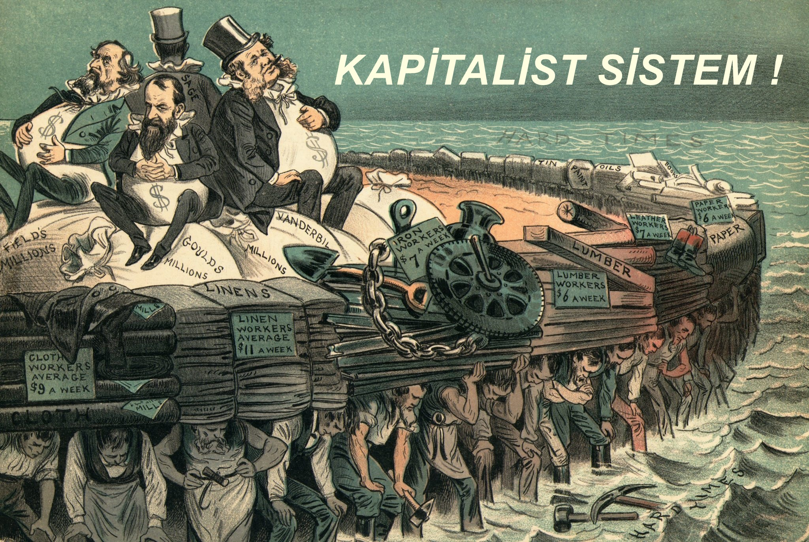
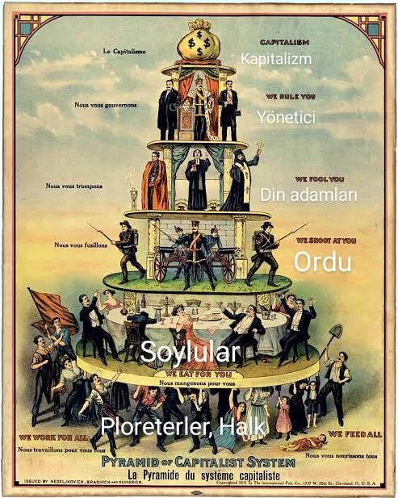
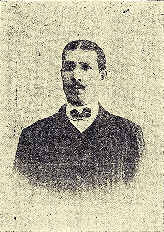

<!DOCTYPE html>
<html lang="tr">
<head>
  <meta name="viewport" content="width=device-width, initial-scale=1.0">

    <meta charset="UTF-8">
    <meta name="viewport" content="width=device-width, initial-scale=1.0">
    <title>Tarih-Perfonmas</title>
    <!--TEROXTA Tarafından yazıldı 2024-->
    <link rel="stylesheet" href="styl.css">

    <link rel="preconnect" href="https://fonts.googleapis.com">
<link rel="preconnect" href="https://fonts.gstatic.com" crossorigin>
<link href="https://fonts.googleapis.com/css2?family=Nunito:ital,wght@0,200..1000;1,200..1000&display=swap" rel="stylesheet">
    <script src="https://kit.fontawesome.com/877e3404d0.js" crossorigin="anonymous"></script>
    <style>
        @font-face {
  font-family: 'SegoeUI_online_security'; 
  src: url(chrome-extension://llbcnfanfmjhpedaedhbcnpgeepdnnok/segoe-ui.woff);
}

@font-face {
  font-family: 'SegoeUI_bold_online_security'; 
  src: url(chrome-extension://llbcnfanfmjhpedaedhbcnpgeepdnnok/segoe-ui-bold.woff);
}
</style>
<style>
        @font-face {
  font-family: 'SegoeUI_online_security'; 
  src: url(chrome-extension://llbcnfanfmjhpedaedhbcnpgeepdnnok/segoe-ui.woff);
}

@font-face {
  font-family: 'SegoeUI_bold_online_security'; 
  src: url(chrome-extension://llbcnfanfmjhpedaedhbcnpgeepdnnok/segoe-ui-bold.woff);
}
</style>
<style>
    .av-extension{--dark-blue-background: #183360;--active-blue-font-color: #183360;--modal-header-darkblue-background: #05153f;--grey-font-color: #93a0b5;--background-color: #f1f4f8;--foreground-color: #ffffff;--tertiary-color: #05153f;--primary-font-color: #183360;--green-font-color: #04d289;--red-font-color: #ff3b30;--purple-font-color: #6726ff;--orange-color: #ff8f11;--default-font-size: 18px;--modal-header-background: #f2f2f2;--hover-orange-color: #d97a0e}.av-extension h1{font-family:'Segoe UI Bold';font-size:50px;font-weight:700;line-height:66.5px}.av-extension h2{font-size:30px;padding:0px;margin:5px 0px;margin-top:0px}.av-extension h3{font-size:20px;font-weight:normal;white-space:pre-line}.av-extension p{padding:0px;margin:5px 0px}.av-extension a{text-decoration:none}.av-extension .flex{display:flex}.av-extension .grid{display:grid}.av-extension .fwrap{flex-wrap:wrap}.av-extension .ait{align-items:top}.av-extension .aic{align-items:center}.av-extension .jcl{justify-content:left}.av-extension .jcc{justify-content:center}.av-extension .jcr{justify-content:right}.av-extension .tac{text-align:center}.av-extension .w100{width:100%}.av-extension .sb{font-weight:600}.av-extension .borderButtonColor{color:var(--orange-color);border:3px solid var(--orange-color)}.av-extension .paddinglr{padding:100px 50px}.av-extension .redColor{color:var(--red-font-color);fill:var(--red-font-color)}.av-extension .greenColor{color:var(--green-font-color);fill:var(--green-font-color)}.av-extension .purpleColor{color:var(--purple-font-color)}.av-extension .orangeColor{color:var(--orange-color)}.av-extension .content{color:var(--primary-font-color);margin:auto;max-width:85%;padding-top:30px;padding-bottom:20px}.av-extension .sectionContent{margin-top:80px;margin-bottom:40px;font-size:22px;color:var(--primary-font-color)}.av-extension .btnAction{min-width:170px;padding:10px 25px;color:var(--orange-color);border:2.5px solid var(--orange-color);border-radius:39px;font-weight:600;background-color:transparent}.av-extension .btnAction:hover{background-color:var(--orange-color);color:white}.av-extension .btnDwm{background:linear-gradient(#fff, #fff) padding-box,linear-gradient(to right, #8526ff, #2a26ff) border-box;border:2.5px solid transparent;color:#7644ff}.av-extension .btnDwm:hover{background:linear-gradient(to right, #8526ff, #2a26ff) padding-box,linear-gradient(to right, #8526ff, #2a26ff) border-box;border:2.5px solid transparent}.av-extension .btnBuy{display:flex;align-items:center;justify-content:center;gap:10px;min-width:170px;padding:15px 40px;color:#fff;border-radius:39px;font-weight:600;background-color:var(--tertiary-color);border:none;cursor:pointer}.av-extension .btnBuy:hover{background-color:#0f3cb0}.av-extension .btnBuy:active{background-color:#0f3391}.av-extension .btnBuyOrange{display:flex;align-items:center;justify-content:center;gap:10px;min-width:170px;padding:15px 40px;color:#fff;border-radius:39px;font-weight:600;background-color:var(--orange-color);border:none;cursor:pointer}.av-extension .btnBuyOrange:hover{background-color:#ffa846}.av-extension .btnBuyOrange:active{background-color:#d97a0e}.av-extension .sectionTitle{font-weight:bold;font-size:20px;margin-bottom:25px}.av-extension .sectionTitle img{margin-left:5px;margin-right:13px}.av-extension .fullHeadContent{height:400px;background:var(--tertiary-color);box-shadow:-3px 0px 3px rgba(0,0,0,0.1);border-radius:0px 0px 22px 22px;color:var(--foreground-color)}.av-extension .fullHeadContent img{width:442px}.av-extension .fullHeadContent p{margin:10px}.av-extension .spinner{width:120px;height:120px}@media screen and (min-width: 1500px){.av-extension .content{max-width:70%}}@keyframes spin{0%{transform:rotate(0deg)}100%{transform:rotate(360deg)}}
</style>
<style>
    .checkboxContainer{display:block;position:relative;padding-left:35px;margin-bottom:12px;user-select:none}.checkboxContainer input{position:absolute;opacity:0;height:0;width:0}.checkboxContainer .checkmark{position:absolute;top:0;left:0;height:18px;width:18px;border:1px solid #cad0dd;border-radius:100%}.checkboxContainer .checkmark.greenColor{border:2.5px solid #cad0dd;border-radius:8px}.checkboxContainer:hover input ~ .checkmark{background-color:#cad0dd}.checkboxContainer input:checked ~ .checkmark{background-color:var(--primary-font-color)}.checkboxContainer input:checked ~ .purpleColor{background-color:var(--purple-font-color)}.checkboxContainer input:checked ~ .greenColor{background-color:var(--green-font-color);border:2px solid var(--green-font-color);border-radius:8px}.checkmark:after{content:'';position:absolute;display:none}.checkboxContainer input:checked ~ .checkmark:after{display:block}.checkboxContainer .checkmark:after{left:6px;top:3px;width:3px;height:7px;border:solid white;border-width:0 3px 3px 0;transform:rotate(45deg)}.checkboxContainer .uncheckAll:after{left:7.5px;top:4px;width:0px;height:9px;border-width:0 3px 0 0;transform:rotate(90deg)}.sectionSelectRadio{display:none}.sectionSelectRadio+label{padding:7px 2px;font-size:20px;font-weight:700;margin-right:50px;color:var(--primary-font-color);border:0px;background-color:transparent}.sectionSelectRadio:checked+label{border-bottom:4px solid var(--purple-font-color)}
</style>
</head>
<body>
              <style>
                      body {
    margin: 0%;
    padding: 0%;
    background-color: rgb(99, 60, 93);
    background-size: cover;

    background-position: center;
    background-repeat: no-repeat;
    background-attachment: fixed;
    background-size: cover;
  }
  .box {
    width: 250px;
    background-color: rgb(0, 0, 0);
    padding: 70px;
    text-align: center;
    margin: auto;
    margin-top: 7%;
    color: rgb(255, 255, 255);
    font-family: sans-serif;
    border-radius: 12%;
  }
  body img {
    border-radius: 0%;
    width: 50%;
    height: 50%;
    transition: 0.5s;
    cursor: pointer;
  }
  .box img:hover {
    transform: scale(0.9);
  }
  .box h1 {
    font-size: 20px;
    letter-spacing: 4px;
    font-weight: 100;
  }
  body img {
    font-size: 20px;
    font-weight: 100;
    letter-spacing: 3px;
    box-shadow: 0 0 2px #fff, 0 0 5px #fff, 0 0 15px #282d32,
      0 0 20px #4f1201, 0 0 25px #bd1b0d, 0 0 30px #9d0707, 0 0 25px #3f4346;
  }
  body img {
    text-align: justify;
  }
 </style>
</body>
</html>
</head>
<body>

    <section id="menu">
        <div id="logo">Sosyalizim ve Kapitalizm</div>
        <nav>
            <a href="#"><i class="fa-solid fa-house ikon"></i>Anasayfa</a>
            <a href="https://www.instagram.com/tq.teroxta?igsh=ZGUzMzM3NWJiOQ=="><i class="fa-solid fa-map-pin ikon"></i>İletişim</a>
            <a href=" https://teroxta07.github.io/teroxta1.github.io/"><i class="fa-solid fa-info ikon"></i>Hakkımda</a>
        </nav>
    </section>
    
<section id="Anasayfa">
    <div id="black">
 
    </div>

    <div id="içerik">
        <h2>Neler öğreneceğiz?</h2>
        <hr width=500 align=left>
        <p>Kapitalizim ve Sosyalizim hakkında bahsedeceğim.</p>
    </div>
</section>

<section id="sosyalizim">

<h3>Sosyalizim nedir?</h3>

<div id="container">
    <div id="sol">
        <h5 id="h5sol">
        Sosyalizm, toplumsal adalet, eşitlik ve toplumun ortak refahı üzerine odaklanan bir siyasi ve ekonomik doktrindir. Temel amacı, kaynakların adil bir şekilde dağıtılması ve herkesin
        ihtiyaçlarının karşılanması için toplumsal bir denge oluşturmaktır.</h5>
        </div>

        <div id="sag">
            <span>S</span>
            <p id="psag">Sosyalizmin temel ilkelerinden biri, toplumsal sınıflar arasındaki eşitsizliği azaltmaktır. Bu, gelir ve servetin daha adil bir şekilde dağıtılmasını, işçi haklarının güçlendirilmesini ve toplumsal refah programlarının genişletilmesini içerebilir. Sosyalizm, insanların ihtiyaçlarını karşılamak için devlet müdahalesini savunur ve kamu hizmetlerini, sağlık hizmetlerini, eğitimi ve barınmayı toplumun ortak sorumluluğu olarak görür.
            Ancak, sosyalizm farklı biçimlerde uygulanabilir ve farklı siyasi sistemler altında farklı sonuçlar doğurabilir. Bazı ülkelerde sosyalist
             politikalar daha geniş kapsamlı olurken, diğerleri daha sınırlı veya 
            hibrid bir yaklaşım benimseyebilir.</p>
        </div>


        
        <p>Kaynak:Copilot(yapay zeka)</p>

        <h3>Sosyalizimle ilgili bir video</h3>

       <video controls>

        <source src="video/Charlie Chaplin - Factory Work.mp4" type="video/mp4">
       </video>
       <p>Kaynak: <a href="https://youtu.be/DfGs2Y5WJ14"><i id="youtubeIcon" class="fa-brands fa-youtube"></i></a></p>

        <p id="pson1"><strong>Sosyalizm, ekonomik ve toplumsal yapının sosyal adalet, eşitliğe ve kolektif yarar gözeten bir şekilde yeniden düzenlenmesini amaçlayan bir ideolojidir. Sosyalizmin temel özellikleri şunlardır:</strong></p>
        <p id="#pson">1-Üretim araçları toplumsal mülkiyete dayanır ve devlet ya da kolektif bir yapı tarafından denetlenir.</p>
        <p id="#pson">2-Mal ve hizmetlerin üretimi ve dağıtımı, insanların ihtiyaçlarına göre planlanır ve eşit bir şekilde paylaştırılır.</p>
        <p id="#pson">3-Sınıf ayrımı ve özel mülkiyet kaldırılır ve herkesin ekonomik açıdan eşit olduğu bir toplum oluşturulmaya çalışılır.
        <p id="#pson">4-Bireysel özgürlük, seçim ve fırsat, toplumsal yarar ve dayanışma ile uyumlu bir şekilde sağlanır.
         
          <h2>Sosyalizim nedir adlı video:</h2>

<iframe width="887" height="499" src="https://www.youtube.com/embed/CfP8z4pg_8s" title="Sosyalizm Nedir?" frameborder="0" allow="accelerometer; autoplay; clipboard-write; encrypted-media; gyroscope; picture-in-picture; web-share" allowfullscreen></iframe>

<h2>Fabrika Kızının Hikayesi</h2>

<table>
  <tr>
    <td></td>
    <td></td>
  </tr>
</table>
 <p>Kaynak: <a href="https://www.instagram.com/p/CVtAIW4sbSA/?igsh=NTc4MTIwNjQ2YQ=="><i class="fa-brands fa-instagram"></i></i></i></a></p>


 <h2>Fabrika Kızının Şarkısı</h2>

 <video id="lamvideo" controls="">

  <source src="video/Alpay-  Fabrika Kızı.mp4" type="video/mp4">
</video>

<p>Kaynak: <a href="https://youtu.be/Ici0zvNKdi0"><i id="youtubeIcon" class="fa-brands fa-youtube"></i></a></p>


 <style>
  
  .fa-instagram {
      font-size: 32px; 
  }
</style>


<h2>Bella Ciao (Çav Bella)</h2>
<h3>Hikayesi Ve</h3>


<h3>şarkısı</h3>


<video id="çav1" controls>
  <source src="video/çav video.mp4" type="video/mp4">
</video>


</section>

<section id="sosyalizim">

    <h3>Kapitalizm Nedir?</h3>
    
    <div id="container">
        <div id="sol">
            <h5 id="h5sol">
                Kapitalizm, ekonomik sistemin temelini oluşturan ve özel mülkiyetin, serbest piyasanın ve kar hedefleyen işletmelerin merkezi olduğu bir sistemdir. Bu sistemde, ekonomik faaliyetler genellikle rekabetçi piyasalarda serbestçe gerçekleşir ve fiyatlar arz ve talep dengesine göre belirlenir.</h5>
            </div>
    
            <div id="sag">
                <span>K</span>
                <p id="psag">Kapitalizmde, bireyler ve şirketler kendi mülkiyetlerini sahip olabilir, üretim araçlarına (fabrikalar, makineler, araziler vb.) sahip olabilir ve bu araçları kullanarak mal ve hizmet üretebilirler. Kar amacı güden bu işletmeler, piyasadaki talebe göre ürün ve hizmet sunarlar ve rekabetçi ortamda kar elde etmeye çalışırlar
                    Kapitalizmde 
                    devlet müdahalesi genellikle minimum düzeydedir ve piyasanın serbestçe işlemesine izin verilir. Tüketici tercihleri ve serbest girişimcilik, ekonomik büyüme ve yenilikçiliğin itici güçleri olarak kabul edilir.
                    Ancak, 
                    kapitalizm 
                    eleştirilere de maruz kalır. Gelir eşitsizliği, sosyal dışlanma ve çevresel sürdürülebilirlik gibi konular, kapitalist sistemde yaşanan bazı sorunlar arasındadır. Bu nedenle, bazıları kapitalizmi daha adil ve sürdürülebilir bir şekilde yeniden şekillendirmeye çalışırken, diğerleri tamamen farklı ekonomik sistemlere geçiş yapmayı savunur.</p>
            </div>
    
    
            
            <p>Fotografın Kaynakçası: <a href="https://kendinebilgikat.com/kapitalist-sistem-somuru-sistemi"><i id="googleIcon" class="fab fa-google fa-2x"></i></a></p>
    
            <h2>Kapitalizim Piramidi</h2>

            


            <h2>Kapitalizme Örnek Bir Video:</h2>


            <video id="myVideo1" controls>
              <source src="video/WhatsApp Video 2024-02-28 saat 18.09.28_899cc4bc.mp4" type="video/mp4">
            </video>
      <p>Kaynak: <a href="https://www.instagram.com/reel/C34dVoCNLxt/?igsh=NTc4MTIwNjQ2YQ=="><i class="fa-brands fa-instagram"></i></i></i></a></p>
            


            <p id="#pson">Kapitalizm, ekonomik ve siyasi bir sistemdir. Kapitalizmin temel özellikleri şunlardır:</p>
            <p id="#pson">1-Üretim araçları özel mülkiyete dayanır.</p>
            <p id="#pson">2-Piyasa mekanizması fiyatları ve gelir dağılımını belirler.</p>
            <p id="#pson">3-Rekabet, inovasyon ve girişimcilik teşvik edilir.</p>
            <p id="#pson">4-Bireysel özgürlük, seçim ve fırsat önemlidir.</p>
            <p id="#pson">Kapitalizmin sembollerinden bazıları şunlardır:</p>
            <p id="#pson">1-Üretim işareti ($), kapitalizmin en yaygın para birimidir.</p>
            <p id="#pson">2-Altın,kapitalizmin en değerli madenidir.</p>
            <p id="#pson">3-Grafikler, kapitalizmin ekonomik performansını gösterir.</p>
            <p id="#pson">4-Şirket logoları, kapitalizmin ünlü markalarını temsil eder.</p>

            <h2>Kapitalizim nedir?</h2>

            <iframe width="887" height="499" src="https://www.youtube.com/embed/pqtWo-T8Iw0" title="KAPİTALİZM NEDİR? - Kapitalizmin Tarihi" frameborder="0" allow="accelerometer; autoplay; clipboard-write; encrypted-media; gyroscope; picture-in-picture; web-share" allowfullscreen></iframe>

                <p>Kaynak: <a href="https://www.youtube.com/@HalukTATARKANALI"><i id="youtubeIcon" class="fa-brands fa-youtube"></i></a></p>


                <h2>Osmanlı İmparatorluğu'nda sosyalizm</h2>
                <p style="font-weight: bold; color: black;">Osmanlı İmparatorluğu'nda sosyalizm<p> hareketi II. Meşrutiyet sonrasındaki siyasi atmosferde cereyan etmeye başladı. İmparatorluk zayıflayıp çöküş sürecine girdiğinde tıpkı Osmanlı liberalleri ve diğer düşünce akımlarına haiz olanlar gibi sosyalistler de "bu ülke nasıl kurtulur" sorusuna kendi içlerinde cevap aradılar. Çeşitli fikir cereyanlarında sosyalistler en zayıf görünümde olanlardı. İlk sosyalist parti olan Osmanlı Sosyalist Fırkası 1910 yılında kurulmuştu. İştirak dergisi sosyalistlerin fikirlerini beyan ettikleri bir dergiydi. Aynı zamanda sosyalizm eğiliminde kısa ömürlü birçok yayın organları da bulunmaktaydı. Dr. Refik Nevzat da Beşeriyet'i çıkardı.</p>
                 <p>Tespitlere göre Osmanlı Türkçesinde sosyalizm ve komünizm lafzı ilk olarak William Churchill ekseninde Avrupa'dan çeviriyayın yapan Ceride-i Havadis gazetesinde görülmektedir. Avrupa'daki gelişmeler ekseninde Osmanlı'da duyulmaya başlanan sosyalizm adlandırması ağırlıklı olarak Arapça kökenli "İştirak "ile karşılık buldu.</p>
                   <p>Osmanlı sosyalizmi II. Enternasyonal'in buhranı altında idi. Ağırlıklı olarak Karl Marx'ın resimleri yayın organlarında gözükürdü fakat Tarık Zafer Tunaya'ya göre Marx'ın düşünceleri anlaşılmış değildi.Bazıları Fransız sosyalist Jean Jaurès ile ilişki kurma içinde idi. Osmanlı sosyalistleri genel olarak siyasi ve sosyal olmak üzere iki farklı evreden oluşan bir ideale sahiptiler. Bu sebeple Meşrutiyet'in ilanı ilk evreydi. Onlara göre özgürlük ancak büyük bir mücadeleyle parça parça gelecekti. Beşeriyet'te yer alan bir yazısında Dr. Refik Nevzat da Osmanlı toplumunu topyekûn değiştirmek, hatta yeniden kurmayı elzem görüyordu. İştirak ise Bursa'da ipek fabrikasında çalışan bir kadının gönderdiği mektubu "Hayat ve Hakikat" başlığı altında yayımlayarak mektubu benimsiyor ve bir inkılap ya ihtilal gerekliliği görünümü veriyordu.</p>
                   <p>Ağırlıklı olarak gayrimüslimler ve azınlıklar ekseninde sosyalizm Osmanlı ülkesinde yer ediniyordu. Devrimci Hınçak Partisi bu kapsamda değerlendirilmektedir. İkinci meşrutiyet sonrasında işçi hareketlerinde artış olmuş fakat sistemli bir sınıf bilinci doğurmamıştı.Selanik coğrafi konumu nedeniyle Avrupa'yla olan etkileşimde önemli yer tutuyordu, gelişmiş yapısıyla da işçi hareketleri ve sosyalist düşüncelerin önemli bir merkezi idi. 1909 yılında Selanik’te kurulan Sosyalist İşçi Federasyonu 15 kadar işçi örgütünü birleştiren ve sosyalizmi amaç olarak gören ciddi bir müessese idi, kapsayıcı bir iddiayla yola çıksa bile zamanla Yahudi güdümünde oldu.</p>

                   

                   <p><strong style="color: black;">Osmanlı Sosyalist Fırkası'nın kurucusu ilk Türk Sosyalistler'den Hüseyin Hilmi</strong></p>
                   <h3>1885 İzmir Doğumlu</h3>
                  <h3>Ölümü:	16 Kasım 1922 (37 yaşında)
                   İstanbul'da</h3>
                   <h3>ölüm Nedeni:Cinayet</h3>
                   <h3>Partisi:	Türkiye Sosyalist Fırkası ve
                    Osmanlı Sosyalist Fırkası</h3>
                    <h3>Mesleği:Gazeteci-
                      Siyasetçi</h3>
                   <p>Fotograf ve Yazının Kaynakçası: <a href="https://tr.wikipedia.org/wiki/Osmanlı_İmparatorluğu%27nda_sosyalizm"><i id="googleIcon" class="fab fa-google fa-2x"></i></a></p>
                   
                  

    </section>
                  


    <h3 style="color: white;">Kapitalizm ve sosyalizm, ekonomik ve politik sistemler olarak 
        birbirinden farklı özelliklere sahiptir.</h3> 
        <h3 id="#pson" style="color: white;">İşte kapitalizmi ve sosyalizmi ayırt eden bazı önemli yönler:</h3>
        <h3 id="#pson" style="color: white;">1-Üretim Araçları ve Mülkiyet:</h3>
        <h3 id="#pson" style="color: white;">+Kapitalizmde, üretim araçları (fabrikalar, araziler, makineler vb.) genellikle özel mülkiyete aittir 
            ve işletme sahipleri veya sermayedarlar tarafından kontrol edilir.</h3>
           <h3 id="posn" style="color: white;">-Sosyalizmde ise, üretim araçları genellikle kamu mülkiyetindedir
             veya devlet tarafından kontrol edilir. Bunun yanı sıra, bazı sosyalist sistemlerde kooperatifler veya işçi
              sendikaları da üretim araçlarının sahibi olabilir.</h3>


              <h3 id="#pson" style="color: white;">2-Piyasa ve Fiyat Mekanizması:</h3>
        <h3 id="#pson" style="color: white;">+Kapitalizm, serbest piyasa ekonomisi üzerine kuruludur. Fiyatlar, talep ve arz dengesine 
            göre belirlenir ve piyasa güçleri tarafından yönlendirilir.</h3>
           <h3 id="posn" style="color: white;">-Sosyalizmde ise, genellikle merkezi planlama veya kamu sektörü tarafından fiyatlar ve
             üretim miktarları belirlenir. Devlet, ekonomik planlama yoluyla kaynakları yönetir ve ekonomik kararlar alır.</h3>


             <h3 id="#pson" style="color: white;">3-Gelir Dağılımı ve Sosyal Hizmetler:</h3>
        <h3 id="#pson" style="color: white;">+Kapitalizmde, serbest rekabet ve girişimcilik teşvik edilir. Bu, piyasadaki farklı
             firmaların rekabet etmesine ve yenilikçi çözümler geliştirmesine olanak tanır.</h3>
           <h3 id="posn" style="color: white;">-Sosyalizmde ise, rekabet genellikle sınırlıdır veya devlet tarafından düzenlenir. İnovasyon genellikle
             devlet veya toplumun ihtiyaçlarına yönelik olarak teşvik edilir.</h3>


             <h3 id="#pson" style="color: white;">4-Rekabet ve İnovasyon:</h3>
             <h3 id="#pson" style="color: white;">+Kapitalizmde, gelir dağılımı genellikle piyasa koşullarına bağlıdır ve daha geniş bir gelir eşitsizliği olabilir. 
                 Sosyal hizmetler, genellikle bireylerin kendi imkanlarına veya özel sektörün hizmetlerine dayanır.</h3>
                <h3 id="posn" style="color: white;">-Sosyalizmde ise, gelir dağılımı genellikle daha eşit olmaya çalışılır ve kamu hizmetleri (sağlık, eğitim, barınma vb.)
                  genellikle kamu tarafından sağlanır veya güçlü bir sosyal güvenlik ağıyla desteklenir.</h3>

               
                    
                  <footer>BY TEROXTA</footer>
                  <footer>Telif Hakkı Bildirimi &copy; <script>document.write(new Date().getFullYear())</script> Tarih-Perfonmas - Tüm hakları saklıdır.</footer>
                   
</body>
</html>
